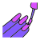
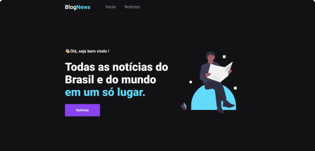
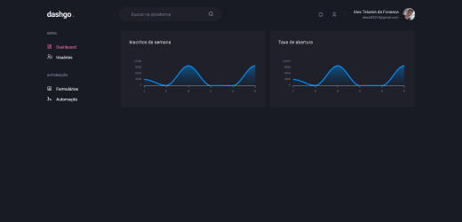
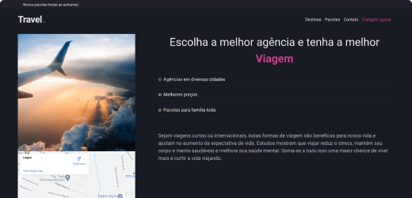
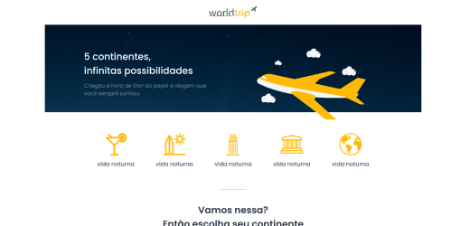
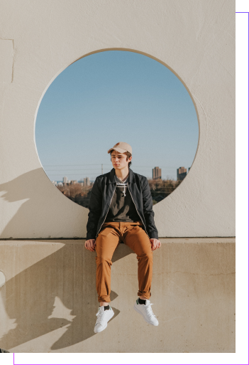

Alex Teixeira da Fonseca
Entusiasta das melhores tecnologias front-end como React.js e Next.js Atualmente fazendo o treinamento Ignite, sobre React.js e afins
Meu currículoConhecimento
- HTML
- CSS
- SASS
- Boostrap
- Git
- Javascript
- React.js
- Typescript
- Next.js
-

Styled Components
Projetos .

Blog News
Blog de notícias criado com Next.js e utilizando a API do google news, sendo atualizado todas as notícias a cada 1 hora utilizando o conceito de SSG para gerar uma página estática quando as notícias são acessadas.
Tecnologias
- Next.js
- Google News(API)
- Typescript

DashGo
Dashgo é um aplicação criada no quarto módulo da trilha do ignite, interface foi criada com next.js e interface declarativa com chakra ui
Tecnologias
- Next.js
- Chakra ui
- React Query
- Typescript
- Mirage js

Travel
Travel é um site de viagens pelo mundo, toda aplicação foi construída com React.js, chakra ui e typescript. O objetivo é treinar os conhecimentos adquiridos no treinamento do Ignite da Rocketseat.
Tecnologias
- React.js
- Chakra ui
- Typescript

World Trip
Travel é um site de viagens pelo mundo, toda aplicação foi construída com React.js, chakra ui e typescript. O objetivo é treinar os conhecimentos adquiridos no treinamento do Ignite da Rocketseat.
Tecnologias
- Next.js
- Json server
- Typescript
Sobre mim .
Alex Teixeira da Fonseca
Dinâmico, espírito de servir, trabalho em grupo, boa comunicação e facilidade em trabalhar nos padrões exigidos pela empresa.
Estou em busca de minha primeira oportunidade na área de tecnologia.
Fui aluno representante, tutor na área de exatas e capitão da equipe de robótica do SESI São Roque.
Atualmente faço Sistemas para Internet na F.A.T.E.C. de São Roque SP, estudo muito a área de U.I./U.X. design e desenvolvimento Front-end.

Cursos .
- Ignite React.js (Rockteseat)
- JavaScript ES6+ (Origamid)
- Css com Sass (Origamid)
- Boostrap 4 (Origamid)
- UX Design (Origamid)
- CSS Grid Layout (Origamid)
- UI Design Avançado (Origamid)
- Tipografia Avançada (Origamid)
- Web Design Completo (Origamid)
Contato .
- alexatf2014@gmail.com
- (11) 4714-1038
- (11) 97618-4659